Software engineer.
Tinkerer. Usually making something.
Welcome to my little world. Pull up a stool and have a look around.
Step inside the 3D workshop ↗Or stay here and explore at your own pace.
Start here.
Five projects to spend some time with.
AVARON
Body-aware training intelligence for athletes and teams.
Read the case study ↗IN DEPTHAmazon Business Compare
Product/deal processing, restrictions checks and dashboard workflows.
Read the case study ↗IN DEPTHLeadsByMail
Geospatial house visualization and direct-mail production tooling.
Read the case study ↗IN DEPTHHiregrove
Job discovery, matching, resume preparation and application review.
Read the case study ↗IN DEPTHCockfights Online
Third-person bird fighting game with movement, combat and online modes.
Read the case study ↗More from my computer
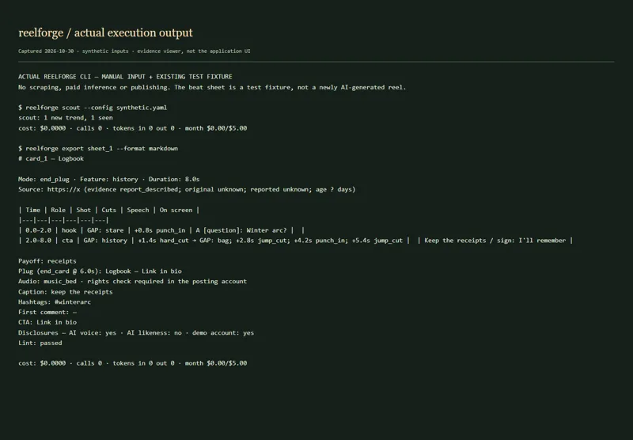
codeReelForge + AVARON reels
Turn trend formats into original scripts, briefs and staged video edits.
Explore the project ↗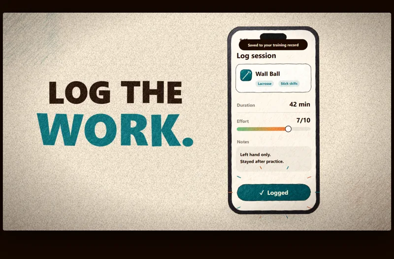
codeAVARON canvas video toolkit
Code-drawn animated shorts, character staging, browser playback and export.
Explore the project ↗ code
codeHuePrint
Scanned blueprints toward interactive 3D residential models.
Explore the project ↗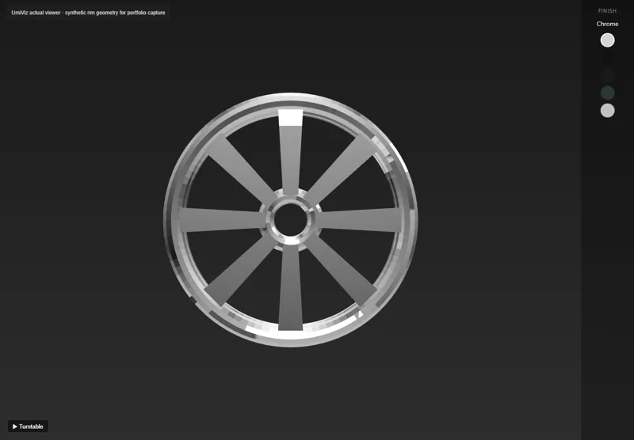
codeUmiViz
Embeddable 3D wheel-rim viewer with finish selection.
Explore the project ↗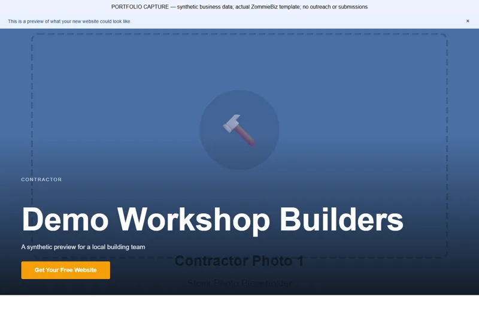
codeZommieBiz
Discover businesses, assess existing websites and generate website previews.
Explore the project ↗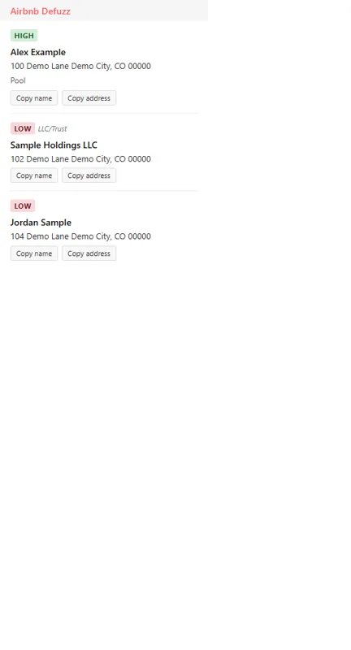
codeAirbnb Defuzz
Match listing signals to candidate public property records.
Explore the project ↗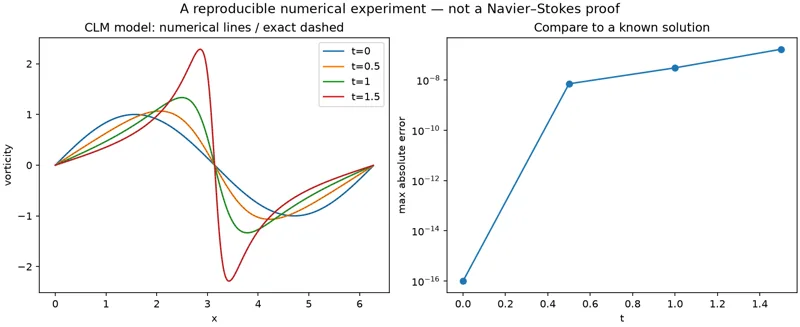
codeNavier–Stokes numerical lab
Explore model equations, fluid simulation and dual-geometry diagnostics.
Explore the project ↗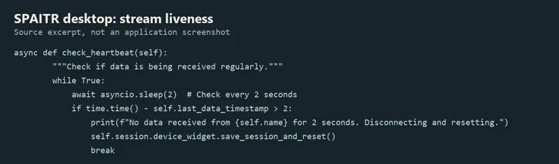
electronicsEarlier SPAITR desktop collection app
Collect BLE sensor sessions and annotate/extract lacrosse shots.
Explore the project ↗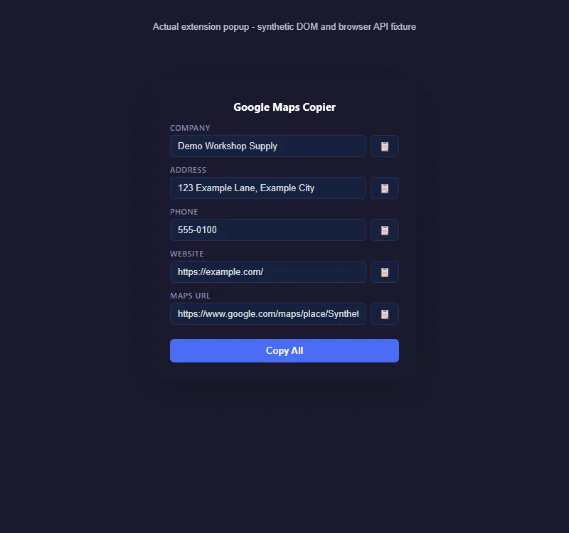
codeGoogle Maps Business Copier
Copy visible business listing fields from a Maps panel.
Explore the project ↗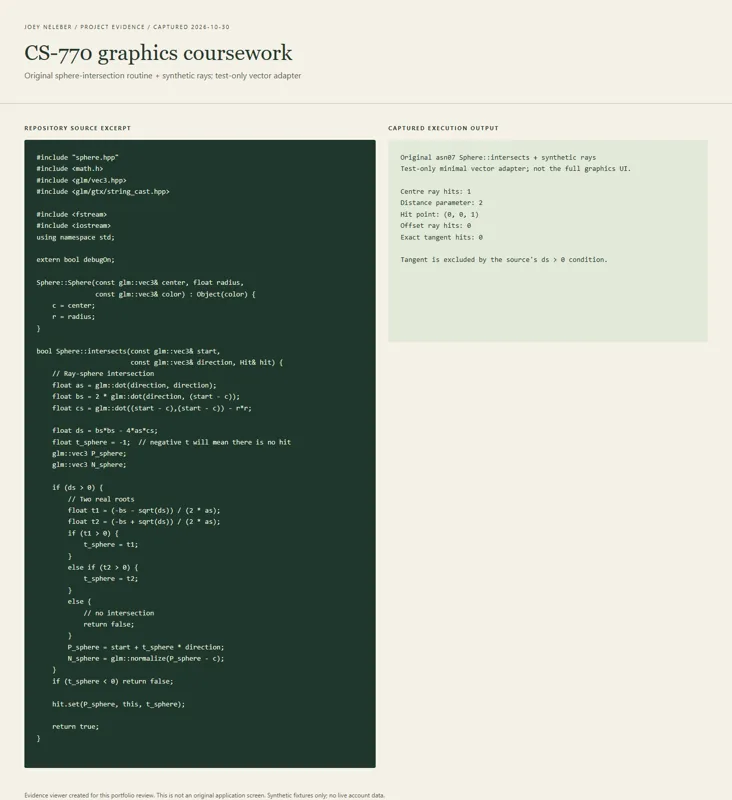
codeCS-770 graphics assignments
Graphics exercises with camera and lighting source.
Explore the project ↗From the woodshop
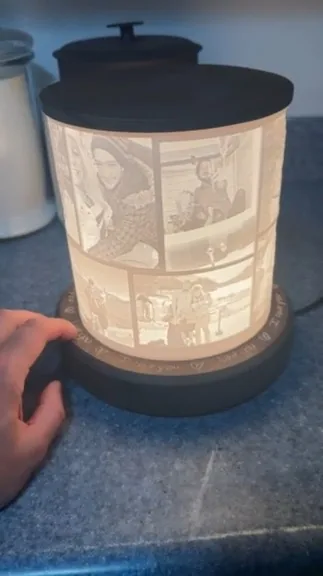
woodWedding lithophane lamp
A personalized wedding gift combining photographic panels, wood and light.
Explore the project ↗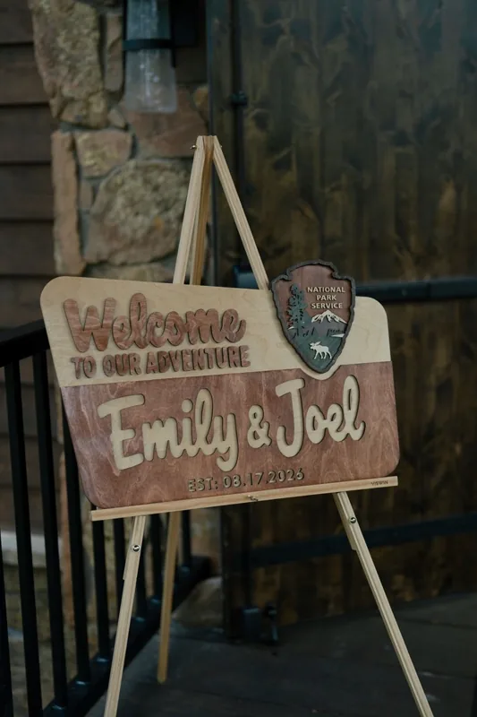
woodThe wedding welcome sign
One of my most diverse builds: a wedding welcome sign that brought CNC design, laser cutting, staining, tiny glue-ups and mounting together.
Explore the project ↗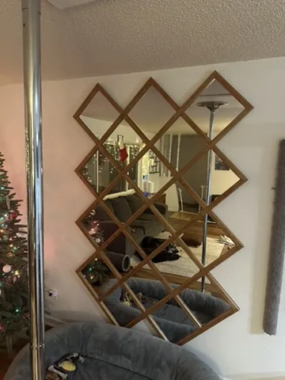
woodGeometric wooden mirror
A geometric mirror combining wood and reflective material.
Explore the project ↗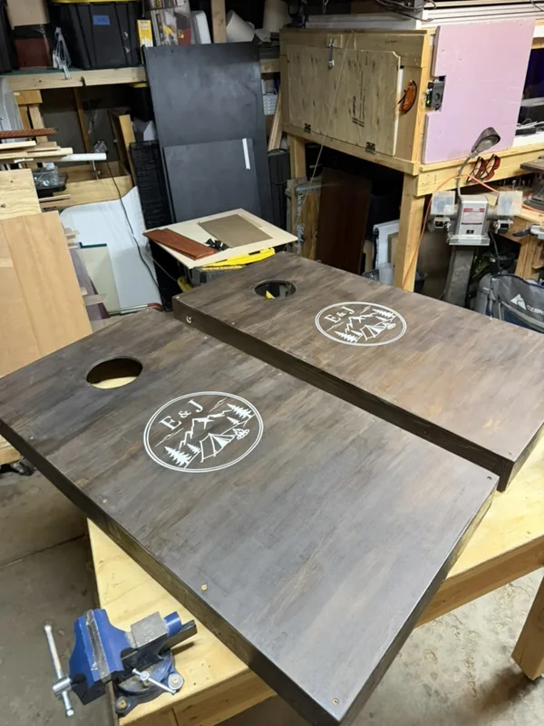
woodObjects for gatherings
Cutting boards, custom cornhole boards, giant stacking game and mountain-shaped table numbers.
Explore the project ↗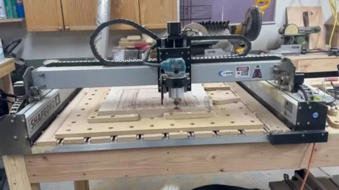
woodCNC, shop and vehicle builds
CNC/engraving work, workshop furniture/storage and vehicle interiors.
Explore the project ↗Following the signal
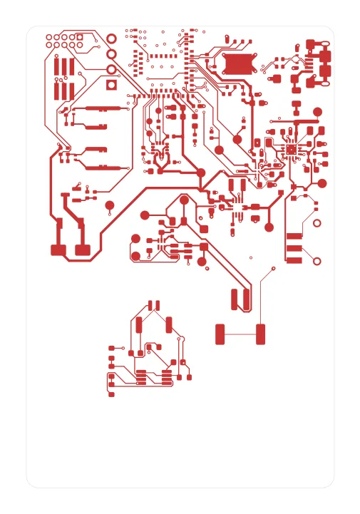
electronicsAVARON R2 sensor prototype
Revived motion-recording sensor hardware, alongside the earlier lacrosse hardware work.
Explore the project ↗ electronics
electronicsNeuroCode / early sensor experiments
IMU logging, Bluetooth transmission and button experiments.
Explore the project ↗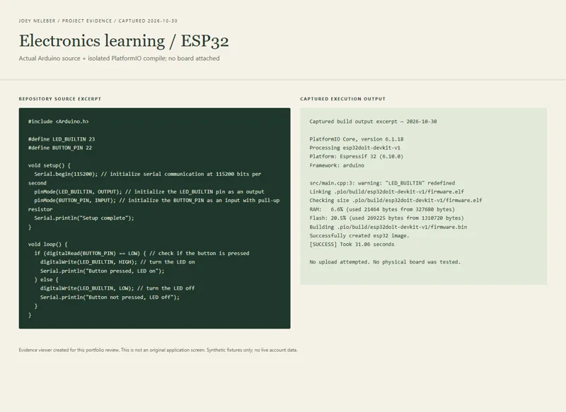
electronicsElectronics learning bench
Practice basic digital input/output with PlatformIO.
Explore the project ↗